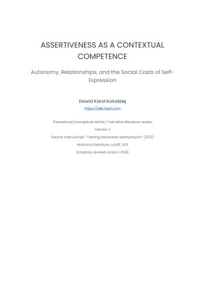

← Back to the library
Psychology / Working paper
Open Assertiveness as a Contextual Competence: Autonomy, Relationships, and the Social Costs of Self-Expression
A working paper on assertiveness, relationships and autonomy
A working paper exploring assertiveness as a context-dependent competence involving autonomy, relationships and the social consequences of self-expression.
Year2026
FormatWorking paper
SubjectPsychology
STATUSPublished
